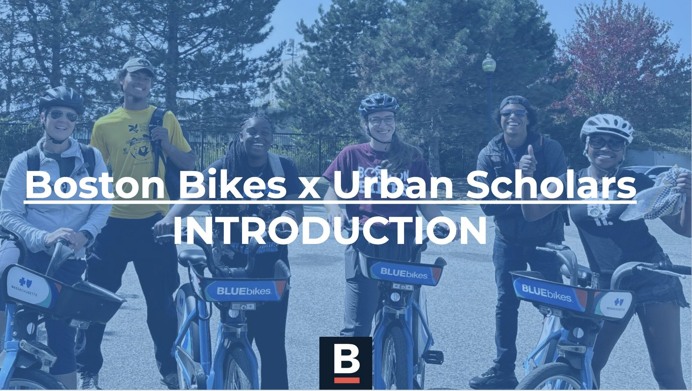
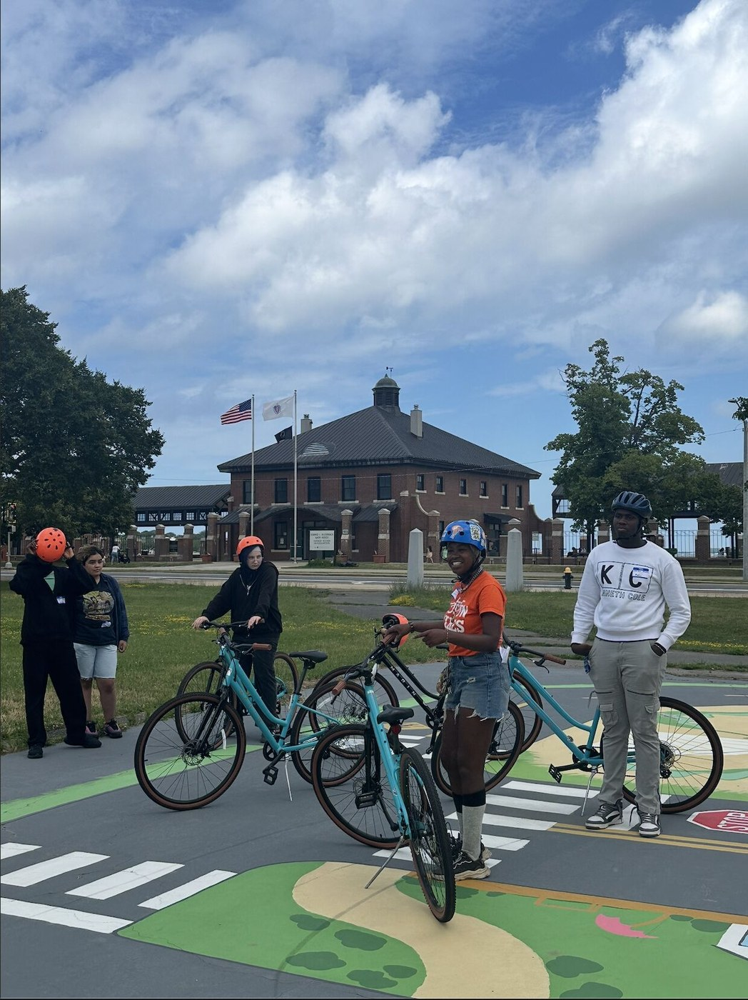
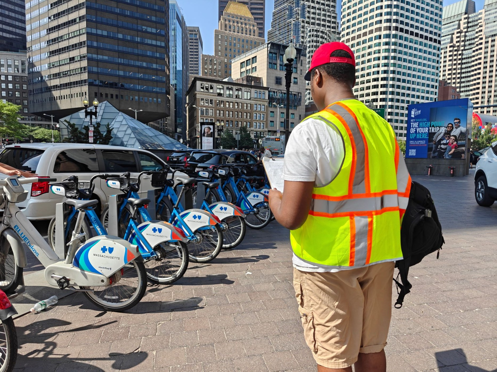
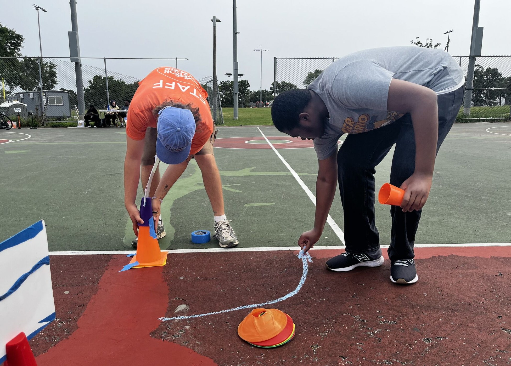
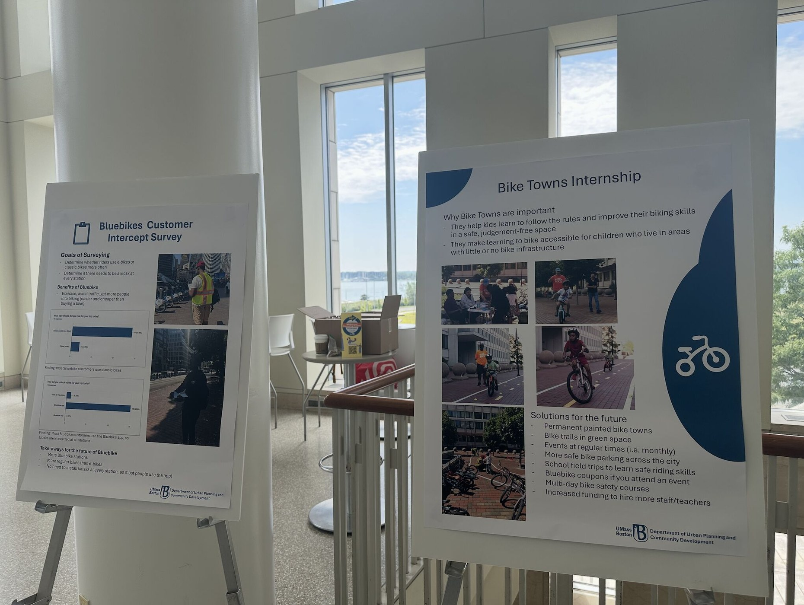
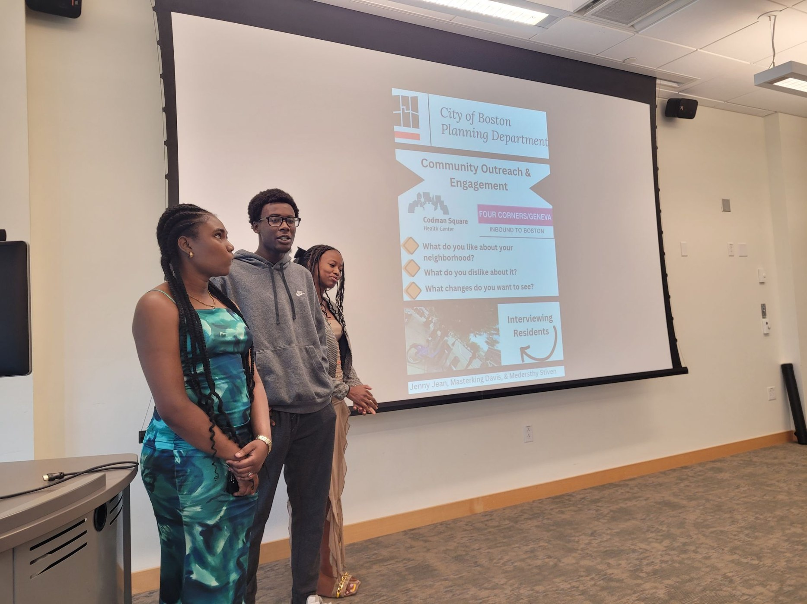

Pop-up learning spaces
Students support temporary Bike Town activities that help youth learn bicycle rules, safe riding practices, and confidence.
UPCD High School Program · Internships
Through the City of Boston Streets Cabinet internship experience, high school students move from classroom learning to field-based planning work.

The internship phase introduces students to transportation planning, bike safety, active transportation, community engagement, and public-sector implementation.
Students support temporary Bike Town activities that help youth learn bicycle rules, safe riding practices, and confidence.
Students observe and document how people use bike-share systems and identify barriers to access.
Students connect transportation concepts to the built environment through observations, inventories, surveys, and public engagement.
Photos from Bike Towns, Bluebikes fieldwork, student posters, and streets-based planning activities.





